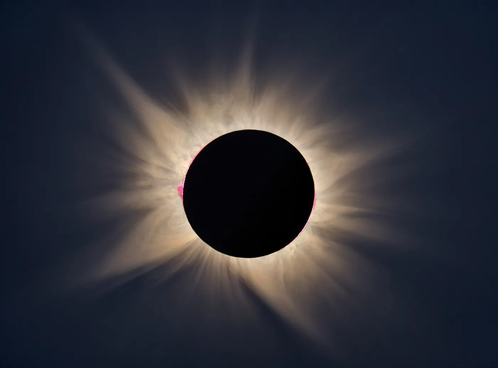
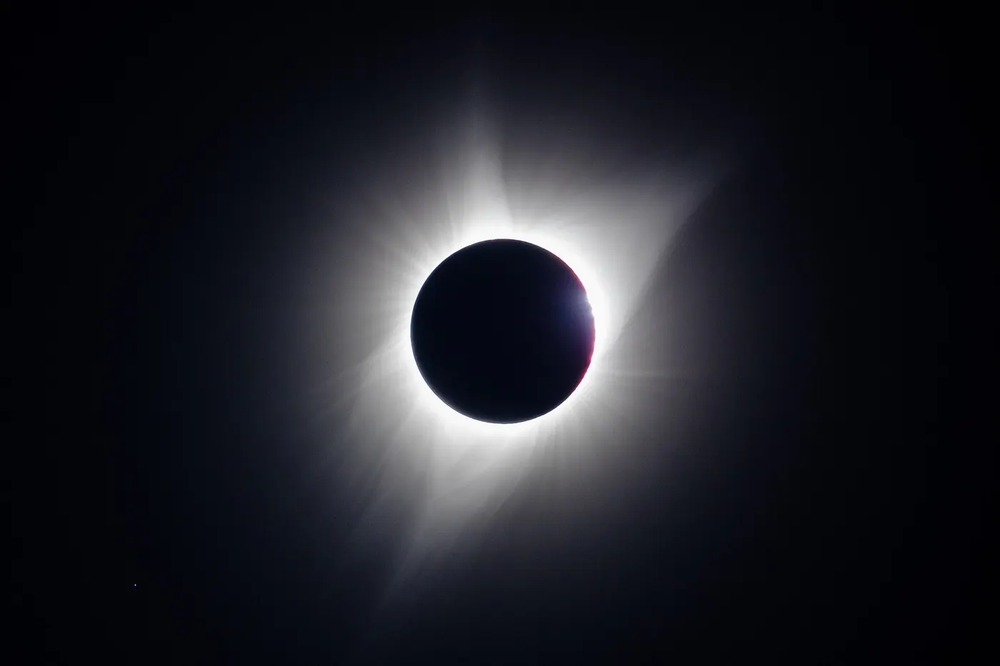

A practical guide for 22 July 2028: what to bring, when to take the filter off, and how to avoid missing the moment.

If this is your first totality, think about just watching. Sydney gets about 3 m 48 s and the Kimberley up to 5 m 10 s, and it goes faster than you expect. A phone on a small tripod recording wide video catches the darkness, the 360° sunset glow and the crowd’s reaction with almost no effort.

Sources: AAQ (Xavier Jubier data)
Partial phases (filter on): shoot a frame every few minutes for a sequence. Seconds before second contact: Baily’s beads and the diamond ring. Totality (filter OFF): bracket widely, from very fast shutter speeds for prominences to slow ones for the outer corona, then blend them later. Third contact: the second diamond ring. Put the filter back on right away.


Rehearse the whole sequence at the same time of day at your site. Get exact contact times for your location from the path map or our Sydney, Kimberley, Outback and New Zealand guides.
Sources: AAQ (Xavier Jubier data)
AAQ suggests Mitchell Falls and the Kimberley gorges, Devils Marbles, the Outback of NT, QLD and NSW, and Sydney’s Harbour Bridge and Opera House. In New Zealand the Sun is only about 10° up, which is ideal for wide shots with mountains.
Sources: AAQ (Xavier Jubier data)
Click any point on the path map for exact totality times, and vote for where the community gathers.